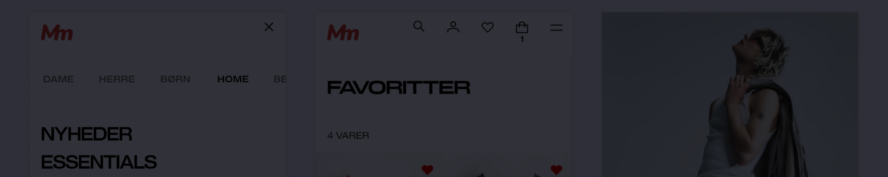

Fashion Rebrand Case Study
Duration
9 months · 2 pilot markets
Responsibilities
Staff Designer, Lead Web UX
Tools
Fashion Rebrand project focused on rebuilding a global fashion retailer's digital entrances to lift brand perception and improve customer journey through the funnel.
Challenge
Brand read as retail, not fashion — dropping recognition, sales, and retention.
Goals
-
Lift brand perception through refined visual identity and user experience.
-
Improve customer journey and reduce bounce rates.
-
Increase session engagement and reduce exit rates.

Case Study — Fashion Rebrand
Relaunching a Fashion Brand Experience on Web
Rebuilding a global fashion retailer's entrances — Start Page and Department navigation — to lift brand perception and move customers down the funnel.
Context
Problem
Brand read as retail, not fashion → dropping recognition/sales/retention
Customer
Fashionista, 18–34, a Validator; hypothesis: win trendsetters → mainstream follows
Team
Senior Core Team (3 brand, 2 UI, 3 UX, 2 DS, 2 research, 3 PM); me = Lead Web UX.
*too centralised/waterfall; teams should contribute earlier.
Process
Planning & Strategy
Mapped opportunities to journey phases; impact-map prioritisation; top-3 concepts on Web; desirability study validated
Exploration & Vision
Web + visual guidelines, breakpoints, layout rules
Design Guidance
Team support, formal pre-dev review, Ready-for-Development standard
Design QA
Shared board, per-team tables, ~50 issues in 2 weeks; built on two designers' methods, credited
Deep-Dive: Entrances
Problem: Early exits from Department pages; nav always started at top level (redundant); unfocused landing → bounce
Hypothesis: Index Page = Women's Department, other departments as tabs; Kids+Babies merged into Kids (huge SEO/working impact)
Start Page - Before
Cluttered index, heavy nav
Before Mockup
Overwhelming navigation options
Start Page - After
Women's dept, tab bar (Women·Men·Kids·Home·Beauty), bigger media, bolder type, less copy
After Mockup
Simplified tab navigation
Navigation - Before
Desktop hover mega-menu
Before Nav
Navigation - After
Progressive disclosure; mobile = horizontal dept tabs anchored to header, hidden on scroll-down, shown on scroll-up
After Nav
Mobile-friendly progressive disclosure
Validation: 9 participants (21–37, DE/UK/US, remote moderated, old+new on App/Mobile/Desktop).
- Tab nav intuitive ✓
- Mobile benefited most
- App vs Web need different menus
- Fewer depts = less complexity
- Some users missed desktop mega-menu
Delivery: 2 teams (Entrances = me, Navigation), one experience; Dept Tab = single shared component across header + menu, mobile + desktop
Outcomes (May 3–31 YoY, pilot — early but promising)
| Metric | Before | After | Change |
|---|---|---|---|
| Sessions | 330k | 450k | +~27% |
| Single-page sessions | 10% | 8.5% | −~14% (~11k more multi-page sessions) |
| Exit rate | 15% | 13% | −~11% (~9k fewer exits) |
| Performance | baseline | +40% | +~40% |
| SEO | ↑ | ||
Also: BUs happier w/ discoverability + content guidelines; campaign production time/cost halved.
*could have done more quantification to separate design impact from season/marketing effects.
Lessons & Relevance
Lessons
- Learn early/often to de-risk
- Include teams earlier, committee design harms culture
- Visible navigation beats hidden
Staff Designer relevance
- Cross-dept navigation at scale
- Brand integrated into product
- Uniting teams on shared missions